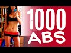

Select a file
Video search
Uploaded

The Best Abs Workout | POP Pilates Top TikTok Hits You guys, we're taking it back to my POP Pilates roots today with one of my favorite ab workouts EVER. No timer. No reps. We're just gonna have fun to the music. You ready? The moves are:
Tabletop Crunch
Legs Up Crunch
Punch N Crunch
Leg Outs
Star Abs
Flutters
Roll Ups
Cross Crunch
Criss Cross
Wiggle
Leg Outs
Russian Twists
Hip Twists
Dolphins
Plank
0:00 Intro
0:42 Say So by Doja Cat
4:45 Playdate by Melanie Martinez
7:48 Supalonely by Benee ft. Gus Dapperton
11:30 End This (L.O.V.E.) by Hailee Steinfeld
#abworkout #pilates #poppilates #blogilates #tiktok
Here is where I get all of my music! Epidemic Sound: http://share.epidemicsound.com/sgFTn
My outfit & yoga mat are from: http://www.popflexactive.com
******
Cassey Ho is an award-winning fitness instructor, entrepreneur and online personality. As the creator behind Blogilates, the #1 female fitness channel on YouTube, she’s transformed millions of lives through helping them achieve their strength and weight-loss goals. She focuses on making fitness fun and the results are evident. Cassey's unique format, POP Pilates©, which launched as a workout video on YouTube in 2009, has become a live fitness class that can be taken at gyms all over the world with over 3,000 POP Pilates classes being taught monthly. Her authenticity continues to shine through, making her one of the most relatable fitness icons online and beyond. She's also the author of the best-selling book, Hot Body Year Round and is the designer of her own activewear line, POPFLEX.
With a wide range of free workout videos available, Cassey's channel focuses on ab exercises, butt & thigh exercises, arm exercises, pilates, cardio routines, fat burning workouts, high intensity interval training workouts (HIIT), stretching and flexibility routines and so much more!
***
DISCLAIMER:
Blogilates and oGorgeous Inc. strongly recommend that you consult with your physician before beginning any exercise program.
You should be in good physical condition and be able to participate in the exercise.
You should understand that when participating in any exercise or exercise program, there is the possibility of physical injury. If you engage in this exercise or exercise program, you agree that you do so at your own risk, are voluntarily participating in these activities, assume all risk of injury to yourself, and agree to release and discharge Blogilates and oGorgeous Inc. from any and all claims or causes of action, known or unknown, arising out of Blogilates' and oGorgeous Inc.'s negligence. 16 min - 7 Jun 2020 |
.jpg) | Extreme Abs Workout | 25 Min At Home Upper Abs, Lower Abs, Obliques & Total Core Pilates Routine You guys!! I can't believe we hit 5 million!!! 10 years ago, I was uploading YouTube videos to just 40 of my students. NOW THERE'S 5 MILLION OF YOU?! From the bottom of my heart, thank you all for continuing to work out with me. Hope we can keep having fun together!
To celebrate, I put together the HARDEST, most insane ab workout EVER! It's a 5x5 workout, which means we're gonna do 5 rounds with 5 different moves in each round, each focusing on different abdominal muscles. That’s 25 different ab exercises in 25 minutes!
Round 1: UPPER ABS
1. HUNDREDS
2. TABLETOP CRUNCH
3. TOE TOUCHES
4. CRESCENT CRUNCH
5. BUTTERFLY CRUNCH
Round 2: LOWER ABS
1. DOUBLE LEG LIFTS
2. SINGLE LEG DROP
3. REVERSE CRUNCHES
4. FLUTTERS
5. DOUBLE D’S
Round 3: CENTER ABS
1. SINGLE STRAIGHT LEG STRETCH
2. DOUBLE LEG STRETCH
3. STAR ABS
4. EAGLE CRUNCH
5. SINGLE LEGGED JACKKNIFE
Round 4: OBLIQUES
1. CANDLESTICK DIPPER R
2. SIDE PLANK DIPPERS R
3. CANDLESTICK DIPPERS L
4. SIDE PLANK DIPPERS L
5. HIP TWIST BUTT UPS
Round 5: TOTAL CORE
1. ROLLOVERS
2. ROLL UP
3. SPRINTER
4. EARTHQUAKE
5. PLANK
Love you guys!!
P.S. I'm wearing my brand new POPFLEX set from the Terrain Collection!! Get yours at https://www.popflexactive.com/!
#abworkout #pilates #poppilates #blogilates #noequipmentworkout
Music is always from: http://share.epidemicsound.com/sgFTn
******
Cassey Ho is an award-winning fitness instructor, entrepreneur and online personality. As the creator behind Blogilates, the #1 female fitness channel on YouTube, she’s transformed millions of lives through helping them achieve their strength and weight-loss goals. She focuses on making fitness fun and the results are evident. Cassey's unique format, POP Pilates©, which launched as a workout video on YouTube in 2009, has become a live fitness class that can be taken at gyms all over the world with over 3,000 POP Pilates classes being taught monthly. Her authenticity continues to shine through, making her one of the most relatable fitness icons online and beyond. She's also the author of the best-selling book, Hot Body Year Round and is the designer of her own activewear line, POPFLEX.
With a wide range of free workout videos available, Cassey's channel focuses on ab exercises, butt & thigh exercises, arm exercises, pilates, cardio routines, fat burning workouts, high intensity interval training workouts (HIIT), stretching and flexibility routines and so much more!
***
DISCLAIMER:
Blogilates and oGorgeous Inc. strongly recommend that you consult with your physician before beginning any exercise program.
You should be in good physical condition and be able to participate in the exercise.
You should understand that when participating in any exercise or exercise program, there is the possibility of physical injury. If you engage in this exercise or exercise program, you agree that you do so at your own risk, are voluntarily participating in these activities, assume all risk of injury to yourself, and agree to release and discharge Blogilates and oGorgeous Inc. from any and all claims or causes of action, known or unknown, arising out of Blogilates' and oGorgeous Inc.'s negligence. 26 min - 23 Apr 2020 |
The 5 Best & Most Effective Ab Exercises These are the 5 ab most effective ab exercises to tone and tighten your abs and help you flatten your tummy. 1. Saturn Rings, 2. Weighted Roll Up, 3. Double Leg Lift, 4. Criss Cross, and 5. Hollow Rock. Do it with me now!
Top from PrAna: http://www.prana.com/jacqueline-top.html?color=Indian%20Red
Shorts from: http://www.ShopBlogilates.com
Song: Let's Work Out by Addison Yarborough
Check it out here: http://www.youtube.com/adyarb
♥ CHECK OUT MY DVD: http://www.poppilatesdvd.com
♥ INSPIRATIONAL SHIRTS: http://www.shopblogilates.com
♥ SUBSCRIBE: http://bit.ly/blogilatesyt
♥ BLOG: http://www.blogilates.com
♥ FB: http://www.facebook.com/blogilates
♥ TWEET: http://www.twitter.com/blogilates
♥ TUMBLR: http://www.blogilates.tumblr.com
♥ PINTEREST: http://pinterest.com/blogilates
♥ INSTAGRAM: http://www.instagram.com/blogilates
*****
Cassey Ho is a certified Pilates and fitness instructor, winner of YouTube Next Trainer, and was also recently named FITNESS Magazine's Best Healthy Living Blogger. 15 min - 25 Feb 2014 |
Perfect 10 Abs! Do these 10 ab exercises together for the best core tightening, ab flattening combo! I suggest you do this workout once a day, every day after your workout - be it weight lifting, cardio, HIIT - this is the perfect way to end your workout routine.
My yoga mat: http://www.ogorgeous.com/product/so-many-succulents-yoga-mat
♥ I HAVE A NEW DVD: http://www.poppilatesdvd.com
♥ INSPIRATIONAL SHIRTS: http://www.shopblogilates.com
♥ SUBSCRIBE: http://bit.ly/blogilatesyt
♥ BLOG: http://www.blogilates.com
♥ FB: http://www.facebook.com/blogilates
♥ TWEET: http://www.twitter.com/blogilates
♥ TUMBLR: http://www.blogilates.tumblr.com
♥ PINTEREST: http://pinterest.com/blogilates
♥ INSTAGRAM: http://www.instagram.com/blogilates
******
Cassey Ho is a certified Pilates and fitness instructor, named Greatist's Top 25 Health & Fitness Influencers in the World alongside Michelle Obama. She is the winner of the "Social Fitness" Shorty Award and FITNESS Magazine named her their "Best Healthy Living Blogger". She's been featured on Dr. Oz, EXTRA TV, The Steve Harvey Show, COSMPOLITAN Magazine, SHAPE Magazine, Ladies Home Journal, SELF Magazine, NY Times, LA Times, and many more.
***
DISCLAIMER:
Blogilates and oGorgeous Inc. strongly recommend that you consult with your physician before beginning any exercise program.
You should be in good physical condition and be able to participate in the exercise.
You should understand that when participating in any exercise or exercise program, there is the possibility of physical injury. If you engage in this exercise or exercise program, you agree that you do so at your own risk, are voluntarily participating in these activities, assume all risk of injury to yourself, and agree to release and discharge Blogilates and oGorgeous Inc. from any and all claims or causes of action, known or unknown, arising out of Blogilates' and oGorgeous Inc.'s negligence. 10 min - 9 Nov 2015 |
.jpg) | 12 Minutes to Toned Abs Workout You guys, I wasn't lying when I said the 12 Minutes of Toned series would be INTENSE! We're just about to be halfway through and I know you're gonna love this one...
Today's all about the abs & obliques!!! Your moves are criss crosses, double leg lifts, table top crunches, eagle crunches, scissors, rollovers & a plank! Let's do this!!
Here is where I get all of my music! Epidemic Sound: http://share.epidemicsound.com/sgFTn
My yoga mat is from: http://www.popflexactive.com
******
Cassey Ho is an award-winning fitness instructor, entrepreneur and online personality. As the creator behind Blogilates, the #1 female fitness channel on YouTube, she’s transformed millions of lives through helping them achieve their strength and weight-loss goals. She focuses on making fitness fun and the results are evident. Cassey's unique format, POP Pilates©, which launched as a workout video on YouTube in 2009, has become a live fitness class that can be taken at gyms all over the world with over 3,000 POP Pilates classes being taught monthly. Her authenticity continues to shine through, making her one of the most relatable fitness icons online and beyond. She's also the author of the best-selling book, Hot Body Year Round and is the designer of her own activewear line, POPFLEX.
With a wide range of free workout videos available, Cassey's channel focuses on ab exercises, butt & thigh exercises, arm exercises, pilates, cardio routines, fat burning workouts, high intensity interval training workouts (HIIT), stretching and flexibility routines and so much more!
***
DISCLAIMER:
Blogilates and oGorgeous Inc. strongly recommend that you consult with your physician before beginning any exercise program.
You should be in good physical condition and be able to participate in the exercise.
You should understand that when participating in any exercise or exercise program, there is the possibility of physical injury. If you engage in this exercise or exercise program, you agree that you do so at your own risk, are voluntarily participating in these activities, assume all risk of injury to yourself, and agree to release and discharge Blogilates and oGorgeous Inc. from any and all claims or causes of action, known or unknown, arising out of Blogilates' and oGorgeous Inc.'s negligence. 15 min - 2 Feb 2020 |
Total Ab Workout | 5 Moves to Your Fittest Core Today we are doing the 5 most effective exercises for your strongest and fittest core ever. A strong core not only helps give you defined abs, but it helps improve your posture and confidence! These moves will work your upper and lower abs, and obliques while focusing on mind-muscle connection and control. This is a great workout for all fitness levels because I provide modifications as you continue to build up your strength and endurance. Oh boy, your abs will be popping after this routine!
Here are the moves:
1. Star Abs
2. Single Leg Jackknives
3. Double Leg Lifts
4. Punch Crunch
5. Earthquake
♥ Get all my workout calendars and read my blog: http://www.blogilates.com
♥ MY ACTIVEWEAR: http://www.popflexactive.com
♥ Get the Blogilates App FREE in the App Store or Google Play Store!
♥ INSTAGRAM: http://www.instagram.com/Blogilates
♥ SNAPCHAT: https://snapchat.com/add/blogilates
♥ FACEBOOK: http://www.facebook.com/blogilates
♥ TWITTER: http://www.twitter.com/blogilates
******
Cassey Ho is an award-winning fitness instructor, entrepreneur and online personality. She is the creator of Blogilates, the #1 female fitness channel on Youtube. In a revolutionary partnership, Cassey's unique format, POP Pilates© which launched on Youtube in 2009, has become a live class that can be taken at every 24 Hr Fitness gym in the US. She's the author of the best-selling book, Hot Body Year Round and is the designer of her own activewear line, POPFLEX.
***
DISCLAIMER:
Blogilates and oGorgeous Inc. strongly recommend that you consult with your physician before beginning any exercise program.
You should be in good physical condition and be able to participate in the exercise.
You should understand that when participating in any exercise or exercise program, there is the possibility of physical injury. If you engage in this exercise or exercise program, you agree that you do so at your own risk, are voluntarily participating in these activities, assume all risk of injury to yourself, and agree to release and discharge Blogilates and oGorgeous Inc. from any and all claims or causes of action, known or unknown, arising out of Blogilates' and oGorgeous Inc.'s negligence. 8 min - 9 Apr 2017 |
.jpg) | 5 Minute Flat Abs! 5 min. 5 moves. 1 min each. Let's get your flat abs! This is a super short but intense abdominal workout. Comment below with your favorite move!
Get my first ever book: http://www.hotbodybook.com Really appreciate your support!!
♥ I HAVE A NEW DVD: http://www.poppilatesdvd.com
♥ INSPIRATIONAL SHIRTS: http://www.blogilatesdesigns.com
♥ SUBSCRIBE: http://bit.ly/blogilatesyt
♥ BLOG: http://www.blogilates.com
♥ FB: http://www.facebook.com/blogilates
♥ TWEET: http://www.twitter.com/blogilates
♥ TUMBLR: http://www.blogilates.tumblr.com
♥ PINTEREST: http://pinterest.com/blogilates
♥ INSTAGRAM: http://www.instagram.com/blogilates
******
Cassey Ho is a certified Pilates and fitness instructor, named Greatist's Top 25 Health & Fitness Influencers in the World alongside Michelle Obama. She is the winner of the "Social Fitness" Shorty Award and FITNESS Magazine named her their "Best Healthy Living Blogger". She's been featured on Dr. Oz, EXTRA TV, The Steve Harvey Show, COSMPOLITAN Magazine, SHAPE Magazine, Ladies Home Journal, SELF Magazine, NY Times, LA Times, and many more.
***
DISCLAIMER:
Blogilates and oGorgeous Inc. strongly recommend that you consult with your physician before beginning any exercise program.
You should be in good physical condition and be able to participate in the exercise.
You should understand that when participating in any exercise or exercise program, there is the possibility of physical injury. If you engage in this exercise or exercise program, you agree that you do so at your own risk, are voluntarily participating in these activities, assume all risk of injury to yourself, and agree to release and discharge Blogilates and oGorgeous Inc. from any and all claims or causes of action, known or unknown, arising out of Blogilates' and oGorgeous Inc.'s negligence. 7 min - 9 Mar 2015 |
5 Best Exercises to Flatten your Lower Belly Flattening the lower abs is possible with a combination of proper training and clean eating. Today I'm going to show you the best moves that will tighten your ab muscles so that they won't protrude. Train hard and follow this months free workout calendar here: http://bit.ly/1deRt3S
♥ CHECK OUT MY DVD: http://www.poppilatesdvd.com
♥ INSPIRATIONAL SHIRTS: http://www.blogilatesdesigns.com
♥ SUBSCRIBE: http://bit.ly/blogilatesyt
♥ BLOG: http://www.blogilates.com
♥ FB: http://www.facebook.com/blogilates
♥ TWEET: http://www.twitter.com/blogilates
♥ TUMBLR: http://www.blogilates.tumblr.com
♥ PINTEREST: http://pinterest.com/blogilates
♥ INSTAGRAM: http://www.instagram.com/blogilates
CLOTHING:
Top from: http://solowstyle.com/
Bottoms from: Forever 21
Filmed and edited by Brad Etter
*****
Cassey Ho is a certified Pilates and fitness instructor, winner of YouTube Next Trainer, and was also recently named FITNESS Magazine's Best Healthy Living Blogger. 10 min - 10 Mar 2014 |
.jpg) | The ULTIMATE 2016 AB WORKOUT! Get my workout calendar: http://www.blogilates.com Starting off the year STRONG with this KICK ABS Workout! We're doing 20 reps and 16 reps of the following moves in this fun, ab sculpting combo:
1. Scissors Kicks x 20
2. Ballerina Situp x 16
3. Corkscrew x 20
4. Ballerina Situp x 16
5. Cha Cha Abs x 20
6. Ballerina Situp x 16
7. Double Leg Lifts x 20
8. Ballerina Situp x 16
9. Teaser x 20 sec
10. Ballerina Situp x 16
Subscribe to my newsletter! http://bit.ly/blogilatesnewsletter
♥ Get my DVD: http://www.poppilatesdvd.com
♥ Cute waterbottles and workout clothes: http://www.shopblogilates.com
♥ SUBSCRIBE: http://bit.ly/blogilatesyt
♥ BLOG: http://www.blogilates.com
♥ FB: http://www.facebook.com/blogilates
♥ TWEET: http://www.twitter.com/blogilates
♥ TUMBLR: http://www.blogilates.tumblr.com
♥ PINTEREST: http://pinterest.com/blogilates
♥ INSTAGRAM: http://www.instagram.com/blogilates
******
Cassey Ho is a certified Pilates and fitness instructor, named Greatist's Top 25 Health & Fitness Influencers in the World alongside Michelle Obama. She is the winner of the "Social Fitness" Shorty Award and FITNESS Magazine named her their "Best Healthy Living Blogger". She's been featured on Dr. Oz, EXTRA TV, The Steve Harvey Show, COSMPOLITAN Magazine, SHAPE Magazine, Ladies Home Journal, SELF Magazine, NY Times, LA Times, and many more.
***
DISCLAIMER:
Blogilates and oGorgeous Inc. strongly recommend that you consult with your physician before beginning any exercise program.
You should be in good physical condition and be able to participate in the exercise.
You should understand that when participating in any exercise or exercise program, there is the possibility of physical injury. If you engage in this exercise or exercise program, you agree that you do so at your own risk, are voluntarily participating in these activities, assume all risk of injury to yourself, and agree to release and discharge Blogilates and oGorgeous Inc. from any and all claims or causes of action, known or unknown, arising out of Blogilates' and oGorgeous Inc.'s negligence. 13 min - 3 Jan 2016 |
Beautiful Abs | Pilates Core Sculpting Workout Who is ready to sculpt some beautiful abs?! Yup, today is all about building that strong core, and feeling elegant and beautiful while doing it!
You guys, we're gonna power through some of your favorite pilates ab moves to really hit those upper abs, lower abs AND obliques!! You're gonna love it.
Here is where I get all of my music! Epidemic Sound: http://share.epidemicsound.com/sgFTn
My yoga mat is from: http://www.popflexactive.com
******
Cassey Ho is an award-winning fitness instructor, entrepreneur and online personality. As the creator behind Blogilates, the #1 female fitness channel on YouTube, she’s transformed millions of lives through helping them achieve their strength and weight-loss goals. She focuses on making fitness fun and the results are evident. Cassey's unique format, POP Pilates©, which launched as a workout video on YouTube in 2009, has become a live fitness class that can be taken at gyms all over the world with over 3,000 POP Pilates classes being taught monthly. Her authenticity continues to shine through, making her one of the most relatable fitness icons online and beyond. She's also the author of the best-selling book, Hot Body Year Round and is the designer of her own activewear line, POPFLEX.
With a wide range of free workout videos available, Cassey's channel focuses on ab exercises, butt & thigh exercises, arm exercises, pilates, cardio routines, fat burning workouts, high intensity interval training workouts (HIIT), stretching and flexibility routines and so much more!
***
DISCLAIMER:
Blogilates and oGorgeous Inc. strongly recommend that you consult with your physician before beginning any exercise program.
You should be in good physical condition and be able to participate in the exercise.
You should understand that when participating in any exercise or exercise program, there is the possibility of physical injury. If you engage in this exercise or exercise program, you agree that you do so at your own risk, are voluntarily participating in these activities, assume all risk of injury to yourself, and agree to release and discharge Blogilates and oGorgeous Inc. from any and all claims or causes of action, known or unknown, arising out of Blogilates' and oGorgeous Inc.'s negligence. 11 min - 17 Nov 2019 |
7-Minutes to Crop Top Abs with Blogilates | Class FitSugar We love Pilates. We love HIIT (that's high-intensity interval training). When Blogilates founder Cassey Ho put the two workouts together you get an ab-centric PIIT workout. And it's awesome. You do each of the seven moves for 45 seconds, followed by a 15-second break. Do the workout once, or repeat for a total of four times to make a killer 28-minute sweat session.
POPSUGAR Fitness offers fresh fitness tutorials, workouts, and exercises that will help you on your road to healthy living, weight loss, and stress relief. Check out Class FitSugar, our do-it-along-with-us real-time workout show hosted by Anna Renderer who will inspire you to sweat alongside fitness experts and Hollywood’s hottest celebrity trainers. Class FitSugar regularly covers the most buzzed-about workout classes and trends, including the Victoria's Secret workout, Tabata, P90X, Bar Method, and more.
Subscribe to POPSUGAR Fitness!
http://www.youtube.com/subscription_center?add_user=popsugartvfit
Like us on Facebook!
https://www.facebook.com/PopSugarFitness/
Check us out on Instagram!
https://www.instagram.com/popsugarfitness/
Eat Clean with POPSUGAR
Get a full 2-week clean-eating plan with our brand-new app! 70 recipes for breakfast, lunch, dinner, snacks, and treats, simple shopping lists, and more! Get the app here: https://itunes.apple.com/us/app/clean-eating-plan-and-recipes/id1262482098?mt=8 8 min - 29 May 2016 |
EXTREME ABS Workout Ready for the hardest ab workout of your life? No kidding. Let's sculpt some sexy abs right now. Ain't nobody said it was gonna be easy!! Read more at http://www.blogilates.com
♥ CHECK OUT MY DVD: http://www.poppilatesdvd.com
♥ INSPIRATIONAL SHIRTS: http://www.shopblogilates.com
♥ SUBSCRIBE: http://bit.ly/blogilatesyt
♥ BLOG: http://www.blogilates.com
♥ FB: http://www.facebook.com/blogilates
♥ TWEET: http://www.twitter.com/blogilates
♥ TUMBLR: http://www.blogilates.tumblr.com
♥ PINTEREST: http://pinterest.com/blogilates
♥ INSTAGRAM: http://www.instagram.com/blogilates
******
Cassey Ho is a certified Pilates and fitness instructor, named Greatist's Top 100 Health & Fitness Influencers in the World alongside Michelle Obama. She is the winner of the "Social Fitness" Shorty Award and FITNESS Magazine named her their "Best Healthy Living Blogger". She's been featured on Dr. Oz, EXTRA TV, The Steve Harvey Show, COSMPOLITAN Magazine, SHAPE Magazine, Ladies Home Journal, SELF Magazine, NY Times, LA Times, and many more.
***
DISCLAIMER:
Blogilates and oGorgeous Inc. strongly recommend that you consult with your physician before beginning any exercise program.
You should be in good physical condition and be able to participate in the exercise.
You should understand that when participating in any exercise or exercise program, there is the possibility of physical injury. If you engage in this exercise or exercise program, you agree that you do so at your own risk, are voluntarily participating in these activities, assume all risk of injury to yourself, and agree to release and discharge Blogilates and oGorgeous Inc. from any and all claims or causes of action, known or unknown, arising out of Blogilates' and oGorgeous Inc.'s negligence. 14 min - 7 Jul 2014 |
.jpg) | 10 Minute Lower Ab Flattener | Total Body Transformation Workout Welcome to your Total Body Transformation!!! Over the next 6 weeks, we're gonna target ALL the major muscles in your body in a way that will make you feel stronger every week.
March workout calendar: https://www.blogilates.com/march-2020-workout-calendar/
I'm really excited about this series because this is the time of year when we're just ready to switch up our workout routines!! I'm gonna tell you EXACTLY what to do every day this month, so it'll basically be like I am your personal trainer. The link to the March workout calendar is above!
You have 8 lower ab moves today, and we'll do each for 1 minute with a 15 second break in between. They are:
1. Double Leg Stretch
2. Expanding Tabletops (R)
3. Expanding Tabletops (L)
4. Reverse Crunch
5. Double Leg Lift
6. Double Ds
7. Rollovers
8. Flutters
Workout starts at 3:13!
Here is where I get all of my music! Epidemic Sound: http://share.epidemicsound.com/sgFTn
******
Cassey Ho is an award-winning fitness instructor, entrepreneur and online personality. As the creator behind Blogilates, the #1 female fitness channel on YouTube, she’s transformed millions of lives through helping them achieve their strength and weight-loss goals. She focuses on making fitness fun and the results are evident. Cassey's unique format, POP Pilates©, which launched as a workout video on YouTube in 2009, has become a live fitness class that can be taken at gyms all over the world with over 3,000 POP Pilates classes being taught monthly. Her authenticity continues to shine through, making her one of the most relatable fitness icons online and beyond. She's also the author of the best-selling book, Hot Body Year Round and is the designer of her own activewear line, POPFLEX.
With a wide range of free workout videos available, Cassey's channel focuses on ab exercises, butt & thigh exercises, arm exercises, pilates, cardio routines, fat burning workouts, high intensity interval training workouts (HIIT), stretching and flexibility routines and so much more!
***
DISCLAIMER:
Blogilates and oGorgeous Inc. strongly recommend that you consult with your physician before beginning any exercise program.
You should be in good physical condition and be able to participate in the exercise.
You should understand that when participating in any exercise or exercise program, there is the possibility of physical injury. If you engage in this exercise or exercise program, you agree that you do so at your own risk, are voluntarily participating in these activities, assume all risk of injury to yourself, and agree to release and discharge Blogilates and oGorgeous Inc. from any and all claims or causes of action, known or unknown, arising out of Blogilates' and oGorgeous Inc.'s negligence. 16 min - 1 Mar 2020 |
.jpg) | 5 Lower Ab Isolation Exercises That Will Make Your Lower Belly Fat Cry Why does it feel like body fat just goes straight to the lower belly? Like, why can't just a tiny bit go to the booty?? Well, I'm about to drop some knowledge on ya! It's not just what you eat that affects those levels of fat, it's also the amount of sleep you get AND how stressed you are feeling. Lack of sleep and stress can increase your cortisol hormone levels and oddly, that can contribute to an increase in lower belly fat.
These five lower ab exercises are JUST what you need if you want to attack the lower belly pooch area (plus more sleep and less stress)!! They isolate your lower abdominals to really blast that belly fat! You can do this whole workout ANYWHERE, no weights required!!
1. Crunched heel taps x 1:30
2. Little U's x 1:30
3. Single leg drop x 1:30
4. Heel push abs x 1:30
5. Reverse double leg lift x 1:30
Workout starts at 1:42!
#abworkout #abs #workout
Here is where I get all of my music! Epidemic Sound: https://goo.gl/Nj4ZMg
My outfit & yoga mat are from: http://www.popflexactive.com
******
Cassey Ho is an award-winning fitness instructor, entrepreneur and online personality. As the creator behind Blogilates, the #1 female fitness channel on YouTube, she’s transformed millions of lives through helping them achieve their strength and weight-loss goals. She focuses on making fitness fun and the results are evident. Cassey's unique format, POP Pilates©, which launched as a workout video on YouTube in 2009, has become a live fitness class that can be taken at gyms all over the world with over 3,000 POP Pilates classes being taught monthly. Her authenticity continues to shine through, making her one of the most relatable fitness icons online and beyond. She's also the author of the best-selling book, Hot Body Year Round and is the designer of her own activewear line, POPFLEX.
With a wide range of free workout videos available, Cassey's channel focuses on ab exercises, butt & thigh exercises, arm exercises, pilates, cardio routines, fat burning workouts, high intensity interval training workouts (HIIT), stretching and flexibility routines and so much more!
***
DISCLAIMER:
Blogilates and oGorgeous Inc. strongly recommend that you consult with your physician before beginning any exercise program.
You should be in good physical condition and be able to participate in the exercise.
You should understand that when participating in any exercise or exercise program, there is the possibility of physical injury. If you engage in this exercise or exercise program, you agree that you do so at your own risk, are voluntarily participating in these activities, assume all risk of injury to yourself, and agree to release and discharge Blogilates and oGorgeous Inc. from any and all claims or causes of action, known or unknown, arising out of Blogilates' and oGorgeous Inc.'s negligence. 11 min - 9 Sep 2018 |
.jpg) | INSANE Abs & Obliques Workout | At Home No Equipment Core & Muffintop Exercises My new luxury suede yoga mat is from: http://bit.ly/POPyogamat
Time to get your strongest abs and your sleekest obliques! Today we are working on your core which includes all the muscles around your waistline! You don't need to go to the gym or pay for a membership when you can do all your workouts from home. These ab flattening, core sculpting, muffintop melting moves will show you the results you want.
Here are your POP Pilates exercises:
1. Sit ups
2. Double leg lifts
3. Single Straight Leg Pulse
4. Cheerleader L's
5. Criss Cross
6. Double Leg Stretch
7. Hollow Rock
8. Cross Crunch
9. Cross Crunch Straight
10. Roll Up Reach
11. Earthquake
Here is where I get all of my music! Epidemic Sound: https://goo.gl/Nj4ZMg
My outfit & yoga mat are from: http://www.popflexactive.com
******
Cassey Ho is an award-winning fitness instructor, entrepreneur and online personality. As the creator behind Blogilates, the #1 female fitness channel on YouTube, she’s transformed millions of lives through helping them achieve their strength and weight-loss goals. She focuses on making fitness fun and the results are evident. Cassey's unique format, POP Pilates©, which launched as a workout video on YouTube in 2009, has become a live fitness class that can be taken at gyms all over the world with over 3,000 POP Pilates classes being taught monthly. Her authenticity continues to shine through, making her one of the most relatable fitness icons online and beyond. She's also the author of the best-selling book, Hot Body Year Round and is the designer of her own activewear line, POPFLEX.
With a wide range of free workout videos available, Cassey's channel focuses on ab exercises, butt & thigh exercises, arm exercises, pilates, cardio routines, fat burning workouts, high intensity interval training workouts (HIIT), stretching and flexibility routines and so much more!
***
DISCLAIMER:
Blogilates and oGorgeous Inc. strongly recommend that you consult with your physician before beginning any exercise program.
You should be in good physical condition and be able to participate in the exercise.
You should understand that when participating in any exercise or exercise program, there is the possibility of physical injury. If you engage in this exercise or exercise program, you agree that you do so at your own risk, are voluntarily participating in these activities, assume all risk of injury to yourself, and agree to release and discharge Blogilates and oGorgeous Inc. from any and all claims or causes of action, known or unknown, arising out of Blogilates' and oGorgeous Inc.'s negligence. 8 min - 18 Feb 2018 |
20 Minute Abdominal Isolate Workout | At-home, no equipment exercises for flat abs! You guys, today's 20 minute Pilates ab workout is NO JOKE. Imagine my hardest ab workout videos all smooshed together into one supreme core crushing workout. And imagine it 20 FREAKING FULL LENGTH MINUTES LONG. Yup. You will have very sore and very toned abs after this. This is the ULTIMATE AB WORKOUT OF ALL TIME.
Your 20 ab flattening moves are:
1. Cross Kick Crunch (R)
2. Cross Kick Crunch (L)
3. Roll Ups
4. Single Leg Drop
5. Toe Touches
6. Criss Cross
7. Butterfly Cruch
8. Butterfly Situp
9. Double Leg Lift
10. Double Leg Stretch
11. Star Abs
12. Crescent Crunch
13. Russian Twist
14. Cha Cha Abs
15. Reverse Crunch
16. Rollovers
17. Reg. Crunch
18. Side Plank (R)
19. Side Plank (L)
20. Plank
Here is where I get all of my music! Epidemic Sound: http://share.epidemicsound.com/sgFTn
My outfit & yoga mat are from: http://www.popflexactive.com
******
Cassey Ho is an award-winning fitness instructor, entrepreneur and online personality. As the creator behind Blogilates, the #1 female fitness channel on YouTube, she’s transformed millions of lives through helping them achieve their strength and weight-loss goals. She focuses on making fitness fun and the results are evident. Cassey's unique format, POP Pilates©, which launched as a workout video on YouTube in 2009, has become a live fitness class that can be taken at gyms all over the world with over 3,000 POP Pilates classes being taught monthly. Her authenticity continues to shine through, making her one of the most relatable fitness icons online and beyond. She's also the author of the best-selling book, Hot Body Year Round and is the designer of her own activewear line, POPFLEX.
With a wide range of free workout videos available, Cassey's channel focuses on ab exercises, butt & thigh exercises, arm exercises, pilates, cardio routines, fat burning workouts, high intensity interval training workouts (HIIT), stretching and flexibility routines and so much more!
***
DISCLAIMER:
Blogilates and oGorgeous Inc. strongly recommend that you consult with your physician before beginning any exercise program.
You should be in good physical condition and be able to participate in the exercise.
You should understand that when participating in any exercise or exercise program, there is the possibility of physical injury. If you engage in this exercise or exercise program, you agree that you do so at your own risk, are voluntarily participating in these activities, assume all risk of injury to yourself, and agree to release and discharge Blogilates and oGorgeous Inc. from any and all claims or causes of action, known or unknown, arising out of Blogilates' and oGorgeous Inc.'s negligence. 25 min - 24 Mar 2019 |
.jpg) | EXTREME ABS 3! Intense at-home ab workout for flat abs! After releasing Extreme Abs and Extreme Abs 2, you've been craving the next level of abdominal sculpting torture and THIS IS IT! EXTREME ABS 3! The craziest at-home ab workout that will help bring out your muscle definition in your abs and also build a super strong core! Using no equipment, I will take you through an insane and effective Pilates ab routine that you've never experienced before.
♥ Get all my workout calendars and read my blog: http://www.blogilates.com
♥ Get the Blogilates App FREE in the App Store or Google Play Store!
♥ MY WATERBOTTLES & CUTE ACTIVEWEAR: http://www.blogilatesdesigns.com
♥ INSTAGRAM: @Blogilates
♥ SNAPCHAT: @Blogilates
♥ FACEBOOK: http://www.facebook.com/blogilates
♥ TWITTER: http://www.twitter.com/blogilates
******
Cassey Ho is an award-winning fitness instructor, entrepreneur and online personality. She is the creator of Blogilates, the #1 female fitness channel on Youtube. In a revolutionary partnership, Cassey's unique format, POP Pilates© which launched on Youtube in 2009, has become a live class that can be taken at every 24 Hr Fitness gym in the US. She's the author of the best-selling book, Hot Body Year Round and is the designer of her own activewear line.
***
DISCLAIMER:
Blogilates and oGorgeous Inc. strongly recommend that you consult with your physician before beginning any exercise program.
You should be in good physical condition and be able to participate in the exercise.
You should understand that when participating in any exercise or exercise program, there is the possibility of physical injury. If you engage in this exercise or exercise program, you agree that you do so at your own risk, are voluntarily participating in these activities, assume all risk of injury to yourself, and agree to release and discharge Blogilates and oGorgeous Inc. from any and all claims or causes of action, known or unknown, arising out of Blogilates' and oGorgeous Inc.'s negligence. 14 min - 28 Mar 2016 |
.jpg) | 10 Minute Beautiful Ab Sculpt Pilates Workout | 7 Day Ab Challenge I want you to join me for the #7DayAbChallenge. https://www.blogilates.com/7-day-ab-challenge-2020/. In 30 minutes a day, we will be building our ab muscles, melting belly fat, and getting stronger!!
Now that it's Day 4, we're going to add our tummy toning workout every day:
BEAUTIFUL AB SCULPT PILATES
1. Legs up crunches
2. Alt. single leg drops
3. Roll ups
4. Alt. single leg drops
5. Eagle Crunches
We'll do each move for 1 minute with a super quick break in between. Let's do this!!!
Download the full challenge graphic: https://www.blogilates.com/7-day-ab-challenge-2020/
Day 1
Waist Whittler Cardio Pilates (20 min): https://youtu.be/LzYAgCw-_B0
Day 2
Waist Whittler Cardio Pilates (20 min): https://youtu.be/LzYAgCw-_B0
Day 3
Waist Whittler Cardio Pilates (20 min): https://youtu.be/LzYAgCw-_B0
Day 4
Waist Whittler Cardio Pilates (20 min): https://youtu.be/LzYAgCw-_B0
Beautiful Ab Sculpt (10 min): https://youtu.be/9wxVX1jn_YU
Day 5
Waist Whittler Cardio Pilates (20 min): https://youtu.be/LzYAgCw-_B0
Beautiful Ab Sculpt (10 min): https://youtu.be/9wxVX1jn_YU
Day 6
Waist Whittler Cardio Pilates (20 min): https://youtu.be/LzYAgCw-_B0
Beautiful Ab Sculpt (10 min): https://youtu.be/9wxVX1jn_YU
Day 7
Waist Whittler Cardio Pilates (20 min): https://youtu.be/LzYAgCw-_B0
Beautiful Ab Sculpt (10 min): https://youtu.be/9wxVX1jn_YU
#abworkout #pilates #poppilates #blogilates #challenge
Here is where I get all of my music! Epidemic Sound: http://share.epidemicsound.com/sgFTn
My outfit & yoga mat are from: http://www.popflexactive.com
******
Cassey Ho is an award-winning fitness instructor, entrepreneur and online personality. As the creator behind Blogilates, the #1 female fitness channel on YouTube, she’s transformed millions of lives through helping them achieve their strength and weight-loss goals. She focuses on making fitness fun and the results are evident. Cassey's unique format, POP Pilates©, which launched as a workout video on YouTube in 2009, has become a live fitness class that can be taken at gyms all over the world with over 3,000 POP Pilates classes being taught monthly. Her authenticity continues to shine through, making her one of the most relatable fitness icons online and beyond. She's also the author of the best-selling book, Hot Body Year Round and is the designer of her own activewear line, POPFLEX.
With a wide range of free workout videos available, Cassey's channel focuses on ab exercises, butt & thigh exercises, arm exercises, pilates, cardio routines, fat burning workouts, high intensity interval training workouts (HIIT), stretching and flexibility routines and so much more!
***
DISCLAIMER:
Blogilates and oGorgeous Inc. strongly recommend that you consult with your physician before beginning any exercise program.
You should be in good physical condition and be able to participate in the exercise.
You should understand that when participating in any exercise or exercise program, there is the possibility of physical injury. If you engage in this exercise or exercise program, you agree that you do so at your own risk, are voluntarily participating in these activities, assume all risk of injury to yourself, and agree to release and discharge Blogilates and oGorgeous Inc. from any and all claims or causes of action, known or unknown, arising out of Blogilates' and oGorgeous Inc.'s negligence. 14 min - 6 May 2020 |
 | 1000 Abs Challenge OH. EM. GEE. Today you and I are doing 1000 reps of the best ab flattening, core strengthening abdominal exercises ever. 10 moves, 100 reps each. By the end, your abs will be SHREDDED. Ready to take this on? It aint no easy feat. Let's do it. #1000abchallenge
♥ I HAVE A NEW DVD: http://www.poppilatesdvd.com
♥ INSPIRATIONAL SHIRTS: http://www.shopblogilates.com
♥ SUBSCRIBE: http://bit.ly/blogilatesyt
♥ BLOG: http://www.blogilates.com
♥ FB: http://www.facebook.com/blogilates
♥ TWEET: http://www.twitter.com/blogilates
♥ TUMBLR: http://www.blogilates.tumblr.com
♥ PINTEREST: http://pinterest.com/blogilates
♥ INSTAGRAM: http://www.instagram.com/blogilates
******
Cassey Ho is a certified Pilates and fitness instructor, named Greatist's Top 25 Health & Fitness Influencers in the World alongside Michelle Obama. She is the winner of the "Social Fitness" Shorty Award and FITNESS Magazine named her their "Best Healthy Living Blogger". She's been featured on Dr. Oz, EXTRA TV, The Steve Harvey Show, COSMPOLITAN Magazine, SHAPE Magazine, Ladies Home Journal, SELF Magazine, NY Times, LA Times, and many more.
***
DISCLAIMER:
Blogilates and oGorgeous Inc. strongly recommend that you consult with your physician before beginning any exercise program.
You should be in good physical condition and be able to participate in the exercise.
You should understand that when participating in any exercise or exercise program, there is the possibility of physical injury. If you engage in this exercise or exercise program, you agree that you do so at your own risk, are voluntarily participating in these activities, assume all risk of injury to yourself, and agree to release and discharge Blogilates and oGorgeous Inc. from any and all claims or causes of action, known or unknown, arising out of Blogilates' and oGorgeous Inc.'s negligence. 29 min - 8 Jun 2015 |
Extreme Ab Flattener | ADVANCED PILATES ABS WORKOUT You guys made it to your level 3 ab workout and this one is legit INSANE. I am so proud of you for making it here - two weeks ago you started with a 15 minute back-to-basics ab workout and now you're about to crush 30 minutes of pure ab fire!! Give yourself a round of applause after this one! 👏
Your moves are:
00:00 Intro
1:30 Hundreds (table top)
2:17 Hundreds (legs up)
3:04 L Hundred
3:38 Hundreds (legs up)
3:58 45 degree hundreds
4:15 Single leg stretch
4:42 Single straight leg stretch
5:14 Scissors
6:52 Roll up
7:26 Single leg jackknife
8:51 V-up
9:44 Teaser
10:28 Single leg drop
10:52 Double leg lift
11:52 Single leg lift
12:50 Double leg stretch
13:21 Double legs stretch flutter
13:50 Flutters
14:42 Heel reaches (table top)
15:21 Heel reaches (legs up)
15:48 Single heel reach
16:20 Heel reaches (legs up)
17:16 Candlestick dipper (arms up)
19:55 Candlestick dipper holds
20:25 Candlestick dipper (arms up)
23:40 Candlestick dipper holds
24:06 Plank
24:32 Plank knee taps
25:10 Plank
25:37 Balance plank
27:01 Hip twists
27:33 Butt ups
#abworkout #pilates #blogilates #blogilatesabs
Here is where I get all of my music! Epidemic Sound: http://share.epidemicsound.com/sgFTn
My outfit & yoga mat are from: http://www.popflexactive.com
******
Cassey Ho is an award-winning fitness instructor, entrepreneur and online personality. As the creator behind Blogilates, the #1 female fitness channel on YouTube, she’s transformed millions of lives through helping them achieve their strength and weight-loss goals. She focuses on making fitness fun and the results are evident. Cassey's unique format, POP Pilates©, which launched as a workout video on YouTube in 2009, has become a live fitness class that can be taken at gyms all over the world with over 3,000 POP Pilates classes being taught monthly. Her authenticity continues to shine through, making her one of the most relatable fitness icons online and beyond. She's also the author of the best-selling book, Hot Body Year Round and is the designer of her own activewear line, POPFLEX.
With a wide range of free workout videos available, Cassey's channel focuses on ab exercises, butt & thigh exercises, arm exercises, pilates, cardio routines, fat burning workouts, high intensity interval training workouts (HIIT), stretching and flexibility routines and so much more!
***
DISCLAIMER:
Blogilates and oGorgeous Inc. strongly recommend that you consult with your physician before beginning any exercise program.
You should be in good physical condition and be able to participate in the exercise.
You should understand that when participating in any exercise or exercise program, there is the possibility of physical injury. If you engage in this exercise or exercise program, you agree that you do so at your own risk, are voluntarily participating in these activities, assume all risk of injury to yourself, and agree to release and discharge Blogilates and oGorgeous Inc. from any and all claims or causes of action, known or unknown, arising out of Blogilates' and oGorgeous Inc.'s negligence. 33 min - 19 Jul 2020 |
.jpg) | Flat Abs Workout | POP Pilates for Beginners If you want to get started with POP Pilates, start here. It is the best way to strengthen your core, shape your waist, and get gorgeous abs! This video is very thorough with technique and explanations so it's great for beginners, but POPsters of all levels should do this video as it will help you build a solid foundation for all of your POP Pilates workouts. This at home workout is easy to do anywhere with no equipment. Let's go and work our abs!
Here are the exercise moves you will see in this workout:
- Roll Up
- Hundreds
- Hundreds Legs Up
- Split Hundreds
- Double Leg Stretch
- Single Leg Drop
- Double Leg Extensions
- Table Top Crunch
- Oblique Swivels
- Twisting Crunch
- Plank
- Side Plank
♥ Get all my workout calendars and read my blog: http://www.blogilates.com
♥ MY ACTIVEWEAR: http://www.popflexactive.com
♥ Get the Blogilates App FREE in the App Store or Google Play Store!
♥ INSTAGRAM: @Blogilates
♥ SNAPCHAT: @Blogilates
♥ FACEBOOK: http://www.facebook.com/blogilates
♥ TWITTER: http://www.twitter.com/blogilates
******
Cassey Ho is an award-winning fitness instructor, entrepreneur and online personality. She is the creator of Blogilates, the #1 female fitness channel on Youtube. In a revolutionary partnership, Cassey's unique format, POP Pilates© which launched on Youtube in 2009, has become a live class that can be taken at every 24 Hr Fitness gym in the US. She's the author of the best-selling book, Hot Body Year Round and is the designer of her own activewear line, POPFLEX.
***
DISCLAIMER:
Blogilates and oGorgeous Inc. strongly recommend that you consult with your physician before beginning any exercise program.
You should be in good physical condition and be able to participate in the exercise.
You should understand that when participating in any exercise or exercise program, there is the possibility of physical injury. If you engage in this exercise or exercise program, you agree that you do so at your own risk, are voluntarily participating in these activities, assume all risk of injury to yourself, and agree to release and discharge Blogilates and oGorgeous Inc. from any and all claims or causes of action, known or unknown, arising out of Blogilates' and oGorgeous Inc.'s negligence. 18 min - 5 Dec 2016 |
Best Lower Ab Workout Ever ♥ TRAIN LIKE A BEAST LOOK LIKE A BEAUTY: http://www.shopblogilates.com
♥ BLOG: http://www.blogilates.com
♥ FB: http://www.facebook.com/blogilates
♥ TWEET: http://www.twitter.com/blogilates
♥ TUMBLR: http://www.blogilates.tumblr.com
♥ PINTEREST: http://pinterest.com/blogilates
♥ INSTAGRAM: http://web.stagram.com/n/blogilates/
This is a lower ab POP Pilates workout created by fitness instructor Cassey Ho! 10 min - 19 Jul 2012 |
.jpg) | 10 Min Ab Sculpting Workout to Blast Belly Fat These are my NEWEST six pack sculpting moves to help you tone your abs, lower belly, and obliques for a hard core and flat abs! It's only 10 minutes long but will target that belly fat zone. Grab your yoga mat, let's do some POP Pilates!
♥ CHECK OUT MY DVD: http://www.poppilatesdvd.com
♥ INSPIRATIONAL SHIRTS: http://www.shopblogilates.com
♥ SUBSCRIBE: http://bit.ly/blogilatesyt
♥ BLOG: http://www.blogilates.com
♥ FB: http://www.facebook.com/blogilates
♥ TWEET: http://www.twitter.com/blogilates
♥ TUMBLR: http://www.blogilates.tumblr.com
♥ PINTEREST: http://pinterest.com/blogilates
♥ INSTAGRAM: http://www.instagram.com/blogilates
******
Cassey Ho is a certified Pilates and fitness instructor, named Greatist's Top 100 Health & Fitness Influencers in the World alongside Michelle Obama. She is the winner of the "Social Fitness" Shorty Award and FITNESS Magazine named her their "Best Healthy Living Blogger". She's been featured on Dr. Oz, EXTRA TV, The Steve Harvey Show, COSMPOLITAN Magazine, SHAPE Magazine, Ladies Home Journal, SELF Magazine, NY Times, LA Times, and many more.
***
DISCLAIMER:
Blogilates and oGorgeous Inc. strongly recommend that you consult with your physician before beginning any exercise program.
You should be in good physical condition and be able to participate in the exercise.
You should understand that when participating in any exercise or exercise program, there is the possibility of physical injury. If you engage in this exercise or exercise program, you agree that you do so at your own risk, are voluntarily participating in these activities, assume all risk of injury to yourself, and agree to release and discharge Blogilates and oGorgeous Inc. from any and all claims or causes of action, known or unknown, arising out of Blogilates' and oGorgeous Inc.'s negligence. 13 min - 6 Oct 2014 |
Victoria Secret Model Ab Workout Wanna get those toned Victoria Secret Model Abs? Okay! Here 's how! This is a full Pilates routine to Taylor Swift's "I Knew You Were Trouble", Ke$ha's "Die Young", and Ne-Yo's "Let Me Love You".
♥ GET MY DVD: http://www.poppilatesdvd.com♥
♥ INSPIRATIONAL SHIRTS: http://www.shopblogilates.com
♥ BLOG: http://www.blogilates.com
♥ FB: http://www.facebook.com/blogilates
♥ TWEET: http://www.twitter.com/blogilates
♥ TUMBLR: http://www.blogilates.tumblr.com
♥ PINTEREST: http://pinterest.com/blogilates
♥ INSTAGRAM: http://web.stagram.com/n/blogilates/
*****
Cassey Ho is a certified Pilates and fitness instructor, winner of YouTube Next Trainer, and was also recently named FITNESS Magazine's Best Healthy Living Blogger.
*****
CLOTHES: Paraty tank and Blast capri from http://www.feelfitwear.com 14 min - 2 Nov 2012 |
.jpg) | 10 Minute Ab & Oblique Sculpter | Total Body Transformation Workout Have you heard of 11 abs? It's those two lines in the center of super chiseled abs, and that's what we're working toward in today's Total Body Transformation workout! This means targeting those middle abs and transverse abdominals.
Last week's weighted arm workout inspired me to do something I've NEVER done before... a weighted ab routine!! Don't forget - this video can still be done without a weight or with any object you have laying around like a book or can of soup!
You have 8 ab moves today. We'll do each for 1 minute with a 15 second break in between. They are:
1. Twisting Crunch (R)
2. Twisting Crunch (L)
3. One Arm Roll Up (R)
4. One Arm Roll Up (L)
5. Boat Infinities
6. Twisting Side Plank (R)
7. Twisting Side Plank (L)
8. Shoulder Tap Plank
Workout starts at 2:23!
March workout calendar: https://www.blogilates.com/march-2020-workout-calendar/
Here is where I get all of my music! Epidemic Sound: http://share.epidemicsound.com/sgFTn
My outfit & yoga mat are from: http://www.popflexactive.com
******
Cassey Ho is an award-winning fitness instructor, entrepreneur and online personality. As the creator behind Blogilates, the #1 female fitness channel on YouTube, she’s transformed millions of lives through helping them achieve their strength and weight-loss goals. She focuses on making fitness fun and the results are evident. Cassey's unique format, POP Pilates©, which launched as a workout video on YouTube in 2009, has become a live fitness class that can be taken at gyms all over the world with over 3,000 POP Pilates classes being taught monthly. Her authenticity continues to shine through, making her one of the most relatable fitness icons online and beyond. She's also the author of the best-selling book, Hot Body Year Round and is the designer of her own activewear line, POPFLEX.
With a wide range of free workout videos available, Cassey's channel focuses on ab exercises, butt & thigh exercises, arm exercises, pilates, cardio routines, fat burning workouts, high intensity interval training workouts (HIIT), stretching and flexibility routines and so much more!
***
DISCLAIMER:
Blogilates and oGorgeous Inc. strongly recommend that you consult with your physician before beginning any exercise program.
You should be in good physical condition and be able to participate in the exercise.
You should understand that when participating in any exercise or exercise program, there is the possibility of physical injury. If you engage in this exercise or exercise program, you agree that you do so at your own risk, are voluntarily participating in these activities, assume all risk of injury to yourself, and agree to release and discharge Blogilates and oGorgeous Inc. from any and all claims or causes of action, known or unknown, arising out of Blogilates' and oGorgeous Inc.'s negligence. 14 min - 22 Mar 2020 |
.jpg) | POP Pilates: Intense Ab Workout! (Full 10 min) http://www.ogorgeous.com This one will TRULY challenge your upper, lower, and transverse abs and help get rid of that belly pooch, so do it now!
Cassey Ho is a fun Pilates Instructor who loves mixing up her moves to upbeat pop music.
Songs in this workout:
"Harder, Better, Faster, Stronger" by Daft Punk
"Da Funk" by Daft Punk
"Wildcat" by Ratatat
------
♥ GET MY DVD: http://www.poppilatesdvd.com ♥
Follow me on Twitter: http://www.twitter.com/blogilates
Read my Blogilates: http://blogilates.tumblr.com/
Join me on Facebook: http://facebook.com/ogorgeous 11 min - 9 Aug 2010 |
3 Moves For Your Best Abs Ever With Blogilates | Class FitSugar Get your best abs ever in just 3 moves from Cassey Ho of Blogilates! These simple ab exercises will have you reaching for that crop top.
POPSUGAR Fitness offers fresh fitness tutorials, workouts, and exercises that will help you on your road to healthy living, weight loss, and stress relief. Check out Class FitSugar, our do-it-along-with-us real-time workout show hosted by Anna Renderer who will inspire you to sweat alongside fitness experts and Hollywood’s hottest celebrity trainers. Class FitSugar regularly covers the most buzzed-about workout classes and trends, including the Victoria's Secret workout, Tabata, P90X, Bar Method, and more.
Subscribe to POPSUGAR Fitness!
http://www.youtube.com/subscription_center?add_user=popsugartvfit
Check out the rest of our channel:
https://www.youtube.com/user/popsugartvfit 2 min - 1 Jun 2016 |
Intense Ab Mania Workout | POP Pilates Enjoy this ab crushing workout! It is my INTENSE AB MANIA routine - you will love it for your belly, obliques, and lower abs.
Congrats to the winners of the yoga mat giveaway! http://bit.ly/coutureyogamats
Kaleidoscope - Sarah K https://www.youtube.com/channel/UCCgboeq8FISd7ElFYOUNB3A
Peony Garden - TheFearlessRadio https://www.youtube.com/user/TheFearlessRadio
Sunset Festival - Shannan Goetsch https://www.youtube.com/channel/UCeNuJbF4DVDxhncPVr-fSog
So Many Succulents - Mizukuraiful https://www.youtube.com/user/Mizukuraiful
♥ I HAVE A NEW DVD: http://www.poppilatesdvd.com
♥ INSPIRATIONAL SHIRTS: http://www.shopblogilates.com
♥ SUBSCRIBE: http://bit.ly/blogilatesyt
♥ BLOG: http://www.blogilates.com
♥ FB: http://www.facebook.com/blogilates
♥ TWEET: http://www.twitter.com/blogilates
♥ TUMBLR: http://www.blogilates.tumblr.com
♥ PINTEREST: http://pinterest.com/blogilates
♥ INSTAGRAM: http://www.instagram.com/blogilates
******
Cassey Ho is a certified Pilates and fitness instructor, named Greatist's Top 25 Health & Fitness Influencers in the World alongside Michelle Obama. She is the winner of the "Social Fitness" Shorty Award and FITNESS Magazine named her their "Best Healthy Living Blogger". She's been featured on Dr. Oz, EXTRA TV, The Steve Harvey Show, COSMPOLITAN Magazine, SHAPE Magazine, Ladies Home Journal, SELF Magazine, NY Times, LA Times, and many more.
***
DISCLAIMER:
Blogilates and oGorgeous Inc. strongly recommend that you consult with your physician before beginning any exercise program.
You should be in good physical condition and be able to participate in the exercise.
You should understand that when participating in any exercise or exercise program, there is the possibility of physical injury. If you engage in this exercise or exercise program, you agree that you do so at your own risk, are voluntarily participating in these activities, assume all risk of injury to yourself, and agree to release and discharge Blogilates and oGorgeous Inc. from any and all claims or causes of action, known or unknown, arising out of Blogilates' and oGorgeous Inc.'s negligence. 15 min - 19 Oct 2015 |
.jpg) | Ab Blast | BEGINNER PILATES ABS WORKOUT Okay you guys, I know this video is called "level 1" but really, it's for ALL levels because today, I really want to make sure we have a solid pilates abs foundation. It's a good thing for EVERYONE to check their form every once in a while, no matter how advanced you are!! If you can get through this video without your neck or your back hurting and without feeling like it didn't really work your abs, then you're ready to move on to level 2 with me next week!
0:00 Intro
1:36 Hundreds
3:38 Single Leg Stretch
5:57 Roll Ups
8:10 Double Leg Stretch
9:54 Heel Reaches
11:43 Candlestick Dippers (R)
12:56 Candlestick Dippers (L)
14:05 Plank
#abworkout #pilates #blogilates #blogilatesabs
Here is where I get all of my music! Epidemic Sound: http://share.epidemicsound.com/sgFTn
My outfit & yoga mat are from: http://www.popflexactive.com
******
Cassey Ho is an award-winning fitness instructor, entrepreneur and online personality. As the creator behind Blogilates, the #1 female fitness channel on YouTube, she’s transformed millions of lives through helping them achieve their strength and weight-loss goals. She focuses on making fitness fun and the results are evident. Cassey's unique format, POP Pilates©, which launched as a workout video on YouTube in 2009, has become a live fitness class that can be taken at gyms all over the world with over 3,000 POP Pilates classes being taught monthly. Her authenticity continues to shine through, making her one of the most relatable fitness icons online and beyond. She's also the author of the best-selling book, Hot Body Year Round and is the designer of her own activewear line, POPFLEX.
With a wide range of free workout videos available, Cassey's channel focuses on ab exercises, butt & thigh exercises, arm exercises, pilates, cardio routines, fat burning workouts, high intensity interval training workouts (HIIT), stretching and flexibility routines and so much more!
***
DISCLAIMER:
Blogilates and oGorgeous Inc. strongly recommend that you consult with your physician before beginning any exercise program.
You should be in good physical condition and be able to participate in the exercise.
You should understand that when participating in any exercise or exercise program, there is the possibility of physical injury. If you engage in this exercise or exercise program, you agree that you do so at your own risk, are voluntarily participating in these activities, assume all risk of injury to yourself, and agree to release and discharge Blogilates and oGorgeous Inc. from any and all claims or causes of action, known or unknown, arising out of Blogilates' and oGorgeous Inc.'s negligence. 17 min - 6 Jul 2020 |
Core Crusher | HOT BODY EXPRESS DVD - Best Ab Workout! If you want the perfect flat ab "pump up" before you throw on your bikini or head out for a big event, do this workout! It is the quickest (10 min only), most effective ab flattening, core strengthening routine out there. This is POP Pilates and it will not only make you look good, it will make you STRONG.
♥ Get all my free workout calendars and read my blog: http://www.blogilates.com
♥ MY ACTIVEWEAR: http://www.popflexactive.com
♥ Get the Blogilates App FREE in the App Store or Google Play Store!
♥ INSTAGRAM: @Blogilates
♥ SNAPCHAT: @Blogilates
♥ FACEBOOK: http://www.facebook.com/blogilates
♥ TWITTER: http://www.twitter.com/blogilates
******
Cassey Ho is an award-winning fitness instructor, entrepreneur and online personality. She is the creator of Blogilates, the #1 female fitness channel on Youtube. In a revolutionary partnership, Cassey's unique format, POP Pilates© which launched on Youtube in 2009, has become a live class that can be taken at every 24 Hr Fitness gym in the US. She's the author of the best-selling book, Hot Body Year Round and is the designer of her own activewear line, POPFLEX.
***
DISCLAIMER:
Blogilates and oGorgeous Inc. strongly recommend that you consult with your physician before beginning any exercise program.
You should be in good physical condition and be able to participate in the exercise.
You should understand that when participating in any exercise or exercise program, there is the possibility of physical injury. If you engage in this exercise or exercise program, you agree that you do so at your own risk, are voluntarily participating in these activities, assume all risk of injury to yourself, and agree to release and discharge Blogilates and oGorgeous Inc. from any and all claims or causes of action, known or unknown, arising out of Blogilates' and oGorgeous Inc.'s negligence. 11 min - 16 Jan 2017 |
Quick Ab Workout! No time? Let's take 3 minutes to flat abs and a hard core! I've created a killer combo of lower leg lifts and criss-crosses to attack your lower belly pooch and shape a nice hourglass shape. Ready? Let's do this.
Song: Live Now by Reece Lemonius
https://www.youtube.com/watch?v=7j-FOAx0luc
♥ CHECK OUT MY DVD: http://www.poppilatesdvd.com
♥ INSPIRATIONAL SHIRTS: http://www.shopblogilates.com
♥ SUBSCRIBE: http://bit.ly/blogilatesyt
♥ BLOG: http://www.blogilates.com
♥ FB: http://www.facebook.com/blogilates
♥ TWEET: http://www.twitter.com/blogilates
♥ TUMBLR: http://www.blogilates.tumblr.com
♥ PINTEREST: http://pinterest.com/blogilates
♥ INSTAGRAM: http://www.instagram.com/blogilates
******
Cassey Ho is a certified Pilates and fitness instructor, named Greatist's Top 100 Health & Fitness Influencers in the World alongside Michelle Obama. She is the winner of the "Social Fitness" Shorty Award and FITNESS Magazine named her their "Best Healthy Living Blogger". She's been featured on Dr. Oz, EXTRA TV, The Steve Harvey Show, COSMPOLITAN Magazine, SHAPE Magazine, Ladies Home Journal, SELF Magazine, NY Times, LA Times, and many more.
***
DISCLAIMER:
Blogilates and oGorgeous Inc. strongly recommend that you consult with your physician before beginning any exercise program.
You should be in good physical condition and be able to participate in the exercise.
You should understand that when participating in any exercise or exercise program, there is the possibility of physical injury. If you engage in this exercise or exercise program, you agree that you do so at your own risk, are voluntarily participating in these activities, assume all risk of injury to yourself, and agree to release and discharge Blogilates and oGorgeous Inc. from any and all claims or causes of action, known or unknown, arising out of Blogilates' and oGorgeous Inc.'s negligence. 7 min - 29 Sep 2014 |
The 7 Best Ab Exercises Sign up for our newsletter: http://goo.gl/UwnMd
Subscribe: http://goo.gl/qR0gi
On today's episode of XHIT, fitness trainer Rebecca-Louise shows you the best ab exercises to flatten your stomach! Remember, always mix up your workout to see better results lose weight quickly! This ab workout will help you burn fat and get your six pack started for the summer! Follow along and let us know what you thought.
Stay tuned to our channel for more episodes: http://goo.gl/c6p4j
Check out our other fun workouts:
1. The Best Victoria Secret Ab Workout: http://www.youtube.com/watch?v=NfvD5yEFh28
2. 5 Minute Ab Workout: http://www.youtube.com/watch?v=D3au2wdRon4
3. Adriana Lima Leg Workout: https://www.youtube.com/watch?v=XTlDkfq4ZZk
4. Total Arm Workout: http://www.youtube.com/watch?v=cF0niVnmMY0
5. How to Burn Off a Starbucks Frappuccino in 5 Minutes: http://www.youtube.com/watch?v=5OTgv_vAZ8Y
Check us out online: http://goo.gl/qVuTM
Facebook: http://goo.gl/HzUSX
Twitter: http://goo.gl/6esYW
Tumblr: http://goo.gl/Tmzhb
Pinterest: http://goo.gl/6tUk9
Instagram: http://goo.gl/mEIzd 9 min - 30 May 2013 |
3 Minute LOWER ABS | POP Pilates Turbo Time to KILL your lower belly pooch with this quick 3 min workout! 7 POP Pilates moves, 30 seconds each, nonstop, no breaks. Ready? GO.
Download the free go90 app to watch my new series, Be Transformed!
iTunes: https://itunes.apple.com/app/id1036435323
Google Play Store: http://play.google.com/store/apps/details?id=com.verizonmedia.go90.enterprise
♥ I HAVE A NEW DVD: http://www.poppilatesdvd.com
♥ INSPIRATIONAL SHIRTS: http://www.shopblogilates.com
♥ SUBSCRIBE: http://bit.ly/blogilatesyt
♥ BLOG: http://www.blogilates.com
♥ FB: http://www.facebook.com/blogilates
♥ TWEET: http://www.twitter.com/blogilates
♥ TUMBLR: http://www.blogilates.tumblr.com
♥ PINTEREST: http://pinterest.com/blogilates
♥ INSTAGRAM: http://www.instagram.com/blogilates
******
Cassey Ho is a certified Pilates and fitness instructor, named Greatist's Top 25 Health & Fitness Influencers in the World alongside Michelle Obama. She is the winner of the "Social Fitness" Shorty Award and FITNESS Magazine named her their "Best Healthy Living Blogger". She's been featured on Dr. Oz, EXTRA TV, The Steve Harvey Show, COSMPOLITAN Magazine, SHAPE Magazine, Ladies Home Journal, SELF Magazine, NY Times, LA Times, and many more.
***
DISCLAIMER:
Blogilates and oGorgeous Inc. strongly recommend that you consult with your physician before beginning any exercise program.
You should be in good physical condition and be able to participate in the exercise.
You should understand that when participating in any exercise or exercise program, there is the possibility of physical injury. If you engage in this exercise or exercise program, you agree that you do so at your own risk, are voluntarily participating in these activities, assume all risk of injury to yourself, and agree to release and discharge Blogilates and oGorgeous Inc. from any and all claims or causes of action, known or unknown, arising out of Blogilates' and oGorgeous Inc.'s negligence. 6 min - 5 Oct 2015 |
20 minute Waist Whittler Cardio Pilates Workout | 7 Day Ab Challenge (do this video every day) I want you to join me for the #7DayAbChallenge. https://www.blogilates.com/7-day-ab-challenge-2020/ In less than 30 minutes a day, we will be building our ab muscles, melting belly fat, and getting stronger!!
7 DAY AB CHALLENGE
Purpose: To build and reveal your abs in 7 days!
Begins: Monday May 4, 2020
Ends: Sunday May 10, 2020
Length: 7 days
Daily commitment: 20-30 min
How it works:
Day 0: Save the challenge graphic and upload it to Instagram or TikTok and let everyone know you’re doing this! Make sure to hashtag #7DayAbChallenge and tag @blogilates.
Day 0: Take a before picture or video of you abs.
Day 1-7: Complete the workouts listed for the day. You can even film yourself doing these and have a cool progress video that you can upload to Instagram, TikTok, or YouTube at the end of the week!
Day 1-7: Make sure to drink at least 64 oz of water a day for all 7 days.
Day 1-7: Make sure to reduce your intake of refined/processed carbs (bread, crackers, cereal, pastries etc.) and replace with whole vegetables and fruits for 7 days.
End of Day 7: Take an after picture or video of your abs and upload the results to Instagram, TikTok, or YouTube! Make sure to include the #7DayAbChallenge hashtag and tag @blogilates so other users can find the challenge!
WAIST WHITTLER CARDIO PILATES
1. Jump squats
2. Hip twists
3. Plank jacks
4. Double leg lifts
5. Plank jack pikes
6. Star abs
7. Flutters
We'll do each move for 45 seconds, with a 15 second break between. Let's do this!!!
Download the full challenge graphic: https://www.blogilates.com/7-day-ab-challenge-2020/
Day 1
Waist Whittler Cardio Pilates (20 min): https://youtu.be/LzYAgCw-_B0
Day 2
Waist Whittler Cardio Pilates (20 min): https://youtu.be/LzYAgCw-_B0
Day 3
Waist Whittler Cardio Pilates (20 min): https://youtu.be/LzYAgCw-_B0
Day 4
Waist Whittler Cardio Pilates (20 min): https://youtu.be/LzYAgCw-_B0
Beautiful Ab Sculpt (10 min): https://youtu.be/9wxVX1jn_YU
Day 5
Waist Whittler Cardio Pilates (20 min): https://youtu.be/LzYAgCw-_B0
Beautiful Ab Sculpt (10 min): https://youtu.be/9wxVX1jn_YU
Day 6
Waist Whittler Cardio Pilates (20 min): https://youtu.be/LzYAgCw-_B0
Beautiful Ab Sculpt (10 min): https://youtu.be/9wxVX1jn_YU
Day 7
Waist Whittler Cardio Pilates (20 min): https://youtu.be/LzYAgCw-_B0
Beautiful Ab Sculpt (10 min): https://youtu.be/9wxVX1jn_YU
#abworkout #pilates #poppilates #blogilates #challenge
Here is where I get all of my music! Epidemic Sound: http://share.epidemicsound.com/sgFTn
My outfit & yoga mat are from: http://www.popflexactive.com
******
Cassey Ho is an award-winning fitness instructor, entrepreneur and online personality. As the creator behind Blogilates, the #1 female fitness channel on YouTube, she’s transformed millions of lives through helping them achieve their strength and weight-loss goals. She focuses on making fitness fun and the results are evident. Cassey's unique format, POP Pilates©, which launched as a workout video on YouTube in 2009, has become a live fitness class that can be taken at gyms all over the world with over 3,000 POP Pilates classes being taught monthly. Her authenticity continues to shine through, making her one of the most relatable fitness icons online and beyond. She's also the author of the best-selling book, Hot Body Year Round and is the designer of her own activewear line, POPFLEX.
With a wide range of free workout videos available, Cassey's channel focuses on ab exercises, butt & thigh exercises, arm exercises, pilates, cardio routines, fat burning workouts, high intensity interval training workouts (HIIT), stretching and flexibility routines and so much more!
***
DISCLAIMER:
Blogilates and oGorgeous Inc. strongly recommend that you consult with your physician before beginning any exercise program.
You should be in good physical condition and be able to participate in the exercise.
You should understand that when participating in any exercise or exercise program, there is the possibility of physical injury. If you engage in this exercise or exercise program, you agree that you do so at your own risk, are voluntarily participating in these activities, assume all risk of injury to yourself, and agree to release and discharge Blogilates and oGorgeous Inc. from any and all claims or causes of action, known or unknown, arising out of Blogilates' and oGorgeous Inc.'s negligence. 25 min - 3 May 2020 |
.jpg) | 15 MIN TOTAL CORE/AB WORKOUT (At Home No Equipment) 15 Min Abs Routine that you can do anywhere! At home & equipment free.
SUBSCRIBE TO MY MAIN CHANNEL (what i eat, recipes, vlogs): https://goo.gl/WTpDQk
OTHER VIDEOS:
➤ PREVIOUS VIDEO (10 min toned arms): https://goo.gl/fH2tyr
➤ AT HOME WORKOUTS: https://goo.gl/fH2tyr
➤ GYM WORKOUTS: https://goo.gl/Hi6R5Q
📷 GEAR I USE:
CAMERA: https://goo.gl/rVQzXd
42.5mm LENS: https://goo.gl/oLRc2u
TRIPOD: https://goo.gl/ihp5br
MICROPHONE: https://goo.gl/fPzkRN
GOPRO: https://goo.gl/D6eMwL
✘ I N S T A G R A M: @madfit.ig
✘ T W I T T E R: @maddielymburner
✘ F A C E B O O K: facebook.com/madfit.ig
✉ C O N T A C T (business inquiries): madfit95@gmail.com 17 min - 16 Dec 2018 |
.jpg) | Intense Lower Abs Workout 🔥 Burn Lower Belly Fat 🤔 Hot new lower abs workout for you! Here's a new favourite routine of mine with back to back abs exercise that's going to help you feel that burn! Enjoy working on those abs and do smash that like button and leave a comment!
☆Summer Shred Challenge 2020☆
Full program schedule - https://www.chloeting.com/program
Warm Up - https://youtu.be/-p0PA9Zt8zk
Episode 1 - https://youtu.be/OBSUUi0FAKo
Episode 2 - https://youtu.be/hAUIGLE8PEo
Episode 3 - https://youtu.be/7L-Td_p0bXE
Episode 4 - https://youtu.be/fMPoCc78v0g
Episode 5 - https://youtu.be/JEEG0hBNk3E
Episode 6 - Releasing 25th May
☆Help subtitle this video☆
http://www.youtube.com/timedtext_video?ref=share&v=JEEG0hBNk3E
☆Sponsor this channel☆
https://www.youtube.com/chloeting/join
☆Sub to my 2nd channel☆
https://www.youtube.com/channel/UCBrcDabYtwbR1VIhwH5efZA?sub_confirmation=1
☆My links☆
https://www.instagram.com/chloe_t/
https://www.instagram.com/itschloeting/
twitch.tv/chloeting
☆Music by☆
Dylan Locke
https://www.youtube.com/user/RadialCreations
Track: JackEL & Skrapbeats - Destiny
Music Provided by Magic Records
Listen To The Original: https://youtu.be/d7TuGcPFAe4
Free Download: https://fanlink.to/dstny
Marin Hoxha X Caravn - Hey Now
Marin Hoxha & Harley Bird - Keeps Me Going
https://www.instagram.com/marin.hoxha/
https://www.youtube.com/channel/UCnAbketHOrqM3cpsTv-vFAw
#abs #homeworkout #chloeting
IMPORTANT DISCLAIMER: Some people may see my video titles as click-bait. YouTubers optimise their video's meta data for discovery due to how the algorithm is like. This isn't anything new. Most people who've been watching YouTube for years would understand this. If you're unhappy and get triggered by this, well, this channel isn't for you then. I’ve provided free workout schedules and programs since day 1 and have always optimised my meta data as such so that's not going to change.
Having said that, it doesn't mean the workout do not work. You will still see results by following a suitable program schedule, watching your diet, being in a deficit or surplus (based on your goals), doing exercises in good form, etc. These are all equally important factors. You're not going to get abs, grow a booty, grow biceps magically from 1 or 2 videos, in 1, 2, 3 or 4 weeks cause everyone is different. A title may come close to suggesting that, but I've explain multiple times throughout videos throughout my channel over years that it takes time and lots of factors, so don't take a video title out of context. Targetting fat loss is also not scientifically proven. Everyone is different and it takes time.
When doing any home workouts, do take precaution to exercise in a safe environment, and if you need help or you're not seeing results, I suggest seeing a health and fitness professional to give you tailored advice on your exercise form and dietary needs. I am not a medical professional and what I share on my channel are my views and what has worked for myself. Your health and safety is the utmost importance so find out what works for you. 11 min - 20 May 2020 |
.jpg) | How to get Flat Abs in 3 minutes! This is a 3 min flat abs challenge to tighten your belly and harden your core! You'll be performing my new POP Pilates move - the Ab Twist Crunch. Ready? Let's go!
♥ I HAVE A NEW DVD: http://www.poppilatesdvd.com
♥ INSPIRATIONAL SHIRTS: http://www.shopblogilates.com
♥ SUBSCRIBE: http://bit.ly/blogilatesyt
♥ BLOG: http://www.blogilates.com
♥ FB: http://www.facebook.com/blogilates
♥ TWEET: http://www.twitter.com/blogilates
♥ TUMBLR: http://www.blogilates.tumblr.com
♥ PINTEREST: http://pinterest.com/blogilates
♥ INSTAGRAM: http://www.instagram.com/blogilates
******
Cassey Ho is a certified Pilates and fitness instructor, named Greatist's Top 25 Health & Fitness Influencers in the World alongside Michelle Obama. She is the winner of the "Social Fitness" Shorty Award and FITNESS Magazine named her their "Best Healthy Living Blogger". She's been featured on Dr. Oz, EXTRA TV, The Steve Harvey Show, COSMPOLITAN Magazine, SHAPE Magazine, Ladies Home Journal, SELF Magazine, NY Times, LA Times, and many more.
***
DISCLAIMER:
Blogilates and oGorgeous Inc. strongly recommend that you consult with your physician before beginning any exercise program.
You should be in good physical condition and be able to participate in the exercise.
You should understand that when participating in any exercise or exercise program, there is the possibility of physical injury. If you engage in this exercise or exercise program, you agree that you do so at your own risk, are voluntarily participating in these activities, assume all risk of injury to yourself, and agree to release and discharge Blogilates and oGorgeous Inc. from any and all claims or causes of action, known or unknown, arising out of Blogilates' and oGorgeous Inc.'s negligence. 7 min - 25 May 2015 |
XHIT - The 7 Best Ab Exercises 9 min - 26 Jul 2014 |
28 DAY AB CHALLENGE #AdoreTheCore Let's get sexy, strong abs and a hard core in 28 days with the #AdoreTheCore Challenge! You can join the Instagram challenge right here: http://www.blogilates.com/blog/2016/07/27/28-day-ab-challenge/
Today I am showing you 5 of my fave POP Pilates abs, obliques, and back moves from the #AdoreTheCore Challenge.
1. Candlestick Dippers
2. Roll Overs
3. Boat Crunch
4. Scissor Reach
5. Extended Plank
♥ Get all my workout calendars and read my blog: http://www.blogilates.com
♥ MY ACTIVEWEAR: http://www.popflexactive.com
♥ Get the Blogilates App FREE in the App Store or Google Play Store!
♥ INSTAGRAM: @Blogilates
♥ SNAPCHAT: @Blogilates
♥ FACEBOOK: http://www.facebook.com/blogilates
♥ TWITTER: http://www.twitter.com/blogilates
******
Cassey Ho is an award-winning fitness instructor, entrepreneur and online personality. She is the creator of Blogilates, the #1 female fitness channel on Youtube. In a revolutionary partnership, Cassey's unique format, POP Pilates© which launched on Youtube in 2009, has become a live class that can be taken at every 24 Hr Fitness gym in the US. She's the author of the best-selling book, Hot Body Year Round and is the designer of her own activewear line, POPFLEX.
***
DISCLAIMER:
Blogilates and oGorgeous Inc. strongly recommend that you consult with your physician before beginning any exercise program.
You should be in good physical condition and be able to participate in the exercise.
You should understand that when participating in any exercise or exercise program, there is the possibility of physical injury. If you engage in this exercise or exercise program, you agree that you do so at your own risk, are voluntarily participating in these activities, assume all risk of injury to yourself, and agree to release and discharge Blogilates and oGorgeous Inc. from any and all claims or causes of action, known or unknown, arising out of Blogilates' and oGorgeous Inc.'s negligence. 12 min - 1 Aug 2016 |
Good Time Abs Challenge ♥ INSPIRATIONAL SHIRTS: http://www.shopblogilates.com
♥ BLOG: http://www.blogilates.com
♥ FB: http://www.facebook.com/blogilates
♥ TWEET: http://www.twitter.com/blogilates
♥ TUMBLR: http://www.blogilates.tumblr.com
♥ PINTEREST: http://pinterest.com/blogilates
♥ INSTAGRAM: http://web.stagram.com/n/blogilates/
This is an ab workout to Owl City and Carly Re Jepson's "Good Time". Cassey teaches you how to do the Hollow Rock and the Twisted Leg Out.
Cassey Ho is a certified Pilates and fitness instructor, winner of YouTube Next Trainer, and was also recently named FITNESS Magazine's Best Healthy Living Blogger. 6 min - 30 Jul 2012 |
.jpg) | Knee-Friendly Fat Burn Cardio Workout | PIIT28 Knee injuries. They happen. So many of you are looking for a knee-friendly workout that still makes you break a sweat, so I made this PIIT (Pilates Intense Interval Training) workout that is super intense on everything BUT the knees!! Remember to play this video four times for a total workout! 45 sec on, 15 sec off. I am using the PIIT Pocket App and the timer to create this workout!
1. Plank punches
2. Pushing grasshopper
3. Side lying leg circles
4. Side press up
5. Sideway scissors
6. Roll-ups
7. Swimmers
If you have other injuries and want to make your own custom workout, download the PIIT Pocket app!
PIIT Pocket for iPhone: http://bit.ly/piitpocket
PIIT Pocket for Android: http://bit.ly/piitpocketandroid
Workout starts at: 1:48
Here is where I get all of my music! Epidemic Sound: https://goo.gl/Nj4ZMg
My outfit & yoga mat are from: http://www.popflexactive.com
******
Cassey Ho is an award-winning fitness instructor, entrepreneur and online personality. As the creator behind Blogilates, the #1 female fitness channel on YouTube, she’s transformed millions of lives through helping them achieve their strength and weight-loss goals. She focuses on making fitness fun and the results are evident. Cassey's unique format, POP Pilates©, which launched as a workout video on YouTube in 2009, has become a live fitness class that can be taken at gyms all over the world with over 3,000 POP Pilates classes being taught monthly. Her authenticity continues to shine through, making her one of the most relatable fitness icons online and beyond. She's also the author of the best-selling book, Hot Body Year Round and is the designer of her own activewear line, POPFLEX.
With a wide range of free workout videos available, Cassey's channel focuses on ab exercises, butt & thigh exercises, arm exercises, pilates, cardio routines, fat burning workouts, high intensity interval training workouts (HIIT), stretching and flexibility routines and so much more!
***
DISCLAIMER:
Blogilates and oGorgeous Inc. strongly recommend that you consult with your physician before beginning any exercise program.
You should be in good physical condition and be able to participate in the exercise.
You should understand that when participating in any exercise or exercise program, there is the possibility of physical injury. If you engage in this exercise or exercise program, you agree that you do so at your own risk, are voluntarily participating in these activities, assume all risk of injury to yourself, and agree to release and discharge Blogilates and oGorgeous Inc. from any and all claims or causes of action, known or unknown, arising out of Blogilates' and oGorgeous Inc.'s negligence.
***
#piit28 #cardio #kneefriendlyworkout 10 min - 2 Sep 2018 |
10 MIN ABS: Love Handle + Muffin Top Workout How to get rid of love handles/muffin top? This 10 min oblique focused ab workout will get your sides burning!
⭐️SHOP MY COOKBOOKS!: https://goo.gl/XHwUJg ⭐️
⭐️DO THIS WARM UP FIRST: http://bit.ly/2riv8T6
⭐️DO THIS COOL DOWN AFTER: http://bit.ly/2YO55PP
⭐️WORKOUTS TO PAIR WITH THIS ONE:
15 min Intense Abs: http://bit.ly/2xnUnpE
15 min Full Body HIIT: http://bit.ly/33awIEX
15 min Total Core: http://bit.ly/38H52c3
10 min Full Body Fat Burn: http://bit.ly/33cyRAk
👉🏼SUBSCRIBE TO MY MAIN CHANNEL (what i eat, recipes, vlogs): https://goo.gl/WTpDQk
📷 GEAR I USE:
👉🏼THE MAT I USE (Exercise 6X4): http://gorillamats.com?aff=19 (MADFIT10 for 10% off)
CAMERA: https://goo.gl/rVQzXd
42.5mm LENS: https://goo.gl/oLRc2u
TRIPOD: https://goo.gl/ihp5br
MICROPHONE: https://goo.gl/fPzkRN
GOPRO: https://goo.gl/D6eMwL
✘ I N S T A G R A M: @madfit.ig
✘ T W I T T E R: @maddielymburner
✘ F A C E B O O K: facebook.com/madfit.ig
✉ C O N T A C T (business inquiries): madfit95@gmail.com 12 min - 12 Mar 2020 |
.jpg) | The Best Body Slimming Workout | POP Pilates Top Hits Ready for today's ALL IN ONE pilates workout?! We've got arms, abs, booty AND legs today for a total body burner that will feel SO GOOD! Your moves are:
Calf Raises
Tip Toe Lunges
Releve Chairs
Robot Arms
Goal Post Punchers
Prayer Pulse
Walnut Crushers
Cha Cha Abs
Earthquake
Roll Up
Mermaid Pulses
Mermaid Circle Front
Mermaid Circle Back
Clamshell Kick
Bridge
Single Legged Bridge - R
Single Legged Bridge - L
00:00 Intro
0:39 Don't Start Now by Dua Lipa
3:43 Rain on me by Lady Gaga with Ariana Grande
6:48 Break My Heart by Dua Lipa
10:29 Salt by Ava Max
#totalbodyworkout #pilates #poppilates #blogilates #tiktok
Here is where I get all of my music! Epidemic Sound: http://share.epidemicsound.com/sgFTn
My outfit & yoga mat are from: http://www.popflexactive.com
******
Cassey Ho is an award-winning fitness instructor, entrepreneur and online personality. As the creator behind Blogilates, the #1 female fitness channel on YouTube, she’s transformed millions of lives through helping them achieve their strength and weight-loss goals. She focuses on making fitness fun and the results are evident. Cassey's unique format, POP Pilates©, which launched as a workout video on YouTube in 2009, has become a live fitness class that can be taken at gyms all over the world with over 3,000 POP Pilates classes being taught monthly. Her authenticity continues to shine through, making her one of the most relatable fitness icons online and beyond. She's also the author of the best-selling book, Hot Body Year Round and is the designer of her own activewear line, POPFLEX.
With a wide range of free workout videos available, Cassey's channel focuses on ab exercises, butt & thigh exercises, arm exercises, pilates, cardio routines, fat burning workouts, high intensity interval training workouts (HIIT), stretching and flexibility routines and so much more!
***
DISCLAIMER:
Blogilates and oGorgeous Inc. strongly recommend that you consult with your physician before beginning any exercise program.
You should be in good physical condition and be able to participate in the exercise.
You should understand that when participating in any exercise or exercise program, there is the possibility of physical injury. If you engage in this exercise or exercise program, you agree that you do so at your own risk, are voluntarily participating in these activities, assume all risk of injury to yourself, and agree to release and discharge Blogilates and oGorgeous Inc. from any and all claims or causes of action, known or unknown, arising out of Blogilates' and oGorgeous Inc.'s negligence. 15 min - 28 Jun 2020 |
5 Best Muffintop Melting Moves - Best Oblique Workout Want to get rid of that "muffintop" and sculpt a sleek hourglass shape instead? Perfect because here are my TOP most EFFECTIVE moves for targeting your obliques. Try it with me now!
Song: Daybreak by Addison Yarborough
Filmed & Edited by Brad Etter
♥ CHECK OUT MY DVD: http://www.poppilatesdvd.com
♥ INSPIRATIONAL SHIRTS: http://www.shopblogilates.com
♥ SUBSCRIBE: http://bit.ly/blogilatesyt
♥ BLOG: http://www.blogilates.com
♥ FB: http://www.facebook.com/blogilates
♥ TWEET: http://www.twitter.com/blogilates
♥ TUMBLR: http://www.blogilates.tumblr.com
♥ PINTEREST: http://pinterest.com/blogilates
♥ INSTAGRAM: http://www.instagram.com/blogilates
CLOTHES
Top from http://www.kiragrace.com
Shorts from Forever 21
*****
Cassey Ho is a certified Pilates and fitness instructor, winner of YouTube Next Trainer, and was also recently named FITNESS Magazine's Best Healthy Living Blogger. 11 min - 24 Mar 2014 |
POP Pilates for Beginners: Ab Time! Follow the Beginner's Workout Calendar! http://bit.ly/beginnerscalendar
This is video #2 in the POP Pilates for Beginners series. 6 moves to work your abs for a flat stomach.
SONGS:
"Price Tag" Jessie J ft B.o.B.
"Brighter Than The Sun" Colbie Caillat
"Free" Natalia Kills ft. Will.i.Am.
BLOG: http://www.blogilates.com
FACEBOOK: http://www.facebook.com/blogilates
TWITTER: http://www.twitter.com/blogilates
OTHER CHANNELS: http://www.youtube.com/blogilatesTV and http://www.youtube.com/fashionoffitness
CLOTHES SPONSORED BY ACTIVEWEARUSA.COM:
Top: http://www.activewearusa.com/store/pc/ION-Actif-Prima-Tank-477p15158.htm
Bottom: http://www.activewearusa.com/store/pc/ION-Actif-Fitted-Jean-Capri-477p15810.htm 13 min - 1 Sep 2011 |
POP Pilates: Muffintop Massacre These are my newest moves to melt down your muffintop. Full length 17 minute workout. Get my yoga mat here: http://bit.ly/beastmat Follow my workout calendar here: http://bit.ly/wocalendar
♥ CHECK OUT MY DVD: http://www.poppilatesdvd.com
♥ INSPIRATIONAL SHIRTS: http://www.shopblogilates.com
♥ SUBSCRIBE: http://bit.ly/blogilatesyt
♥ BLOG: http://www.blogilates.com
♥ FB: http://www.facebook.com/blogilates
♥ TWEET: http://www.twitter.com/blogilates
♥ TUMBLR: http://www.blogilates.tumblr.com
♥ PINTEREST: http://pinterest.com/blogilates
♥ INSTAGRAM: http://www.instagram.com/blogilates
*****
Cassey Ho is a certified Pilates and fitness instructor, winner of YouTube Next Trainer, and was also recently named FITNESS Magazine's Best Healthy Living Blogger. 18 min - 23 Sep 2013 |
.jpg) | 12 MIN AB WORKOUT - Medium Level / No Equipment I Pamela Reif I know I'm popular for my super duper intense Sixpack Workouts .. and I also have Beginner ones. But what about something IN BETWEEN? ♥︎ / Werbung
If you're not a Beginner anymore, but the other videos are still a tiny bit too hard for you. This workout is for you! I hope I managed to find the perfect "in between" Level - a MEDIUM one.
Have fun! :)
__
The video is in full length which means you can just follow whatever I’m doing 30s for each exercise. If you need a break - TAKE IT! Don't worry too much about that. You will improve over time :) that's the best feeling!
I recommend switching up your workouts to give your muscles enough time to recover and to hit them from different angles. If you want to challenge your body in another way: check out my Live Workouts (with talking + explanations), the 20min Full Body Workouts, Leg Workouts or the Song Workouts.
▸ you can find WORKOUT PLANS with those videos on my Instagram Channel. 30min, 45min and Beginner Friendly combinations. Check out the Highlight Bubble "Workout Plans" for that.
➞ Instagram http://www.instagram.com/pamela_rf/
__
▸ You can always find ALL SONGS in my workout playlist. I update it weekly & it's available on Spotify, Apple Music, etc. ♥︎
http://wmg.click/GetActive
1. Deepend feat. She Keeps Bees - Desire 0:00 - 2:41
2. Sam Feldt feat. Ella Henderson - Hold me Close 2:42 - 5:44
3. Diplo, Sidepiece - On My Mind 5:45 - 9:30
4. Dubdogz, Bhaskar - Infinity 9:31 - 12:38
__
➞ Instagram http://www.instagram.com/pamela_rf/
➞ Food Account http://www.instagram.com/pamgoesnuts/
__
unterstützt durch Warner Music Germany
Disclaimer:
When joining me for this workout video, you need to take some precautions as your health and safety is the most important. To avoid any injury or harm, you need to check your health with your doctor before exercising. By performing any fitness exercises without supervision like with this video, you are performing them at your own risk. See a fitness professional to give you advice on your exercise form. Pamela Reif will not be responsible or liable for any injury or harm you sustain as a result of this video. 13 min - 29 Mar 2020 |
Cardio Dance Party Workout | Top TikTok Hits Yes, today is a cardio day, but I wanna do something different. So we WON'T be using a timer, or counting reps. I want you guys just to have fun and sweat a little! to some of my current fave top hits! Just do the moves to the beat and let yourself be free!!! The cardio moves are:
Squats
Lunges
Side Squats
Plie Squats
Jump to Body Swirl
Plank Walk Opener
Plank Walk
Plank Jacks
Plank to Squat Ups
Charlestons
Cross Fronts
Squares
Featured Songs:
0:00 Intro
1:06 Friendships by Pascal Letoublon
4:55 Boss Bitch by Doja Cat
7:10 Roses by SAINt JHN (Imanbek Remix)
10:05 Dance Monkey by Tones and I
#cardioworkout #pilates #poppilates #blogilates #tiktok
If you're not already, follow me on TikTok! https://www.tiktok.com/@blogilates
My outfit & yoga mat are from: http://www.popflexactive.com
******
Cassey Ho is an award-winning fitness instructor, entrepreneur and online personality. As the creator behind Blogilates, the #1 female fitness channel on YouTube, she’s transformed millions of lives through helping them achieve their strength and weight-loss goals. She focuses on making fitness fun and the results are evident. Cassey's unique format, POP Pilates©, which launched as a workout video on YouTube in 2009, has become a live fitness class that can be taken at gyms all over the world with over 3,000 POP Pilates classes being taught monthly. Her authenticity continues to shine through, making her one of the most relatable fitness icons online and beyond. She's also the author of the best-selling book, Hot Body Year Round and is the designer of her own activewear line, POPFLEX.
With a wide range of free workout videos available, Cassey's channel focuses on ab exercises, butt & thigh exercises, arm exercises, pilates, cardio routines, fat burning workouts, high intensity interval training workouts (HIIT), stretching and flexibility routines and so much more!
***
DISCLAIMER:
Blogilates and oGorgeous Inc. strongly recommend that you consult with your physician before beginning any exercise program.
You should be in good physical condition and be able to participate in the exercise.
You should understand that when participating in any exercise or exercise program, there is the possibility of physical injury. If you engage in this exercise or exercise program, you agree that you do so at your own risk, are voluntarily participating in these activities, assume all risk of injury to yourself, and agree to release and discharge Blogilates and oGorgeous Inc. from any and all claims or causes of action, known or unknown, arising out of Blogilates' and oGorgeous Inc.'s negligence. 14 min - 31 May 2020 |
8 Minute At-Home Ab Workout with The Bella Twins! Join me and the incredible Bella Twins for a super effective 8 minute at home abdominal workout! Nikki and Brie are professional wrestlers, entrepreneurs, and basically the coolest women ever so it was really exciting getting to sweat together. Get ready for your upper abs, lower abs, AND obliques to be on FIYAH. We’re getting that core strong and tight all while burning fat! Let’s go!
Subscribe to the Bella Twins: https://www.youtube.com/channel/UCIJnHb6meZoOjKF68h35QgQ
Your moves:
1. Punch crunch
2. Roll ups
3. Double leg lifts
4. Hip twists
5. Lower leg lifts
6. Star abs
7. Criss cross abs
8. Plank
Here is where I get all of my music! Epidemic Sound: https://goo.gl/Nj4ZMg
My outfit & yoga mat are from: http://www.popflexactive.com
******
Cassey Ho is an award-winning fitness instructor, entrepreneur and online personality. As the creator behind Blogilates, the #1 female fitness channel on YouTube, she’s transformed millions of lives through helping them achieve their strength and weight-loss goals. She focuses on making fitness fun and the results are evident. Cassey's unique format, POP Pilates©, which launched as a workout video on YouTube in 2009, has become a live fitness class that can be taken at gyms all over the world with over 3,000 POP Pilates classes being taught monthly. Her authenticity continues to shine through, making her one of the most relatable fitness icons online and beyond. She's also the author of the best-selling book, Hot Body Year Round and is the designer of her own activewear line, POPFLEX.
With a wide range of free workout videos available, Cassey's channel focuses on ab exercises, butt & thigh exercises, arm exercises, pilates, cardio routines, fat burning workouts, high intensity interval training workouts (HIIT), stretching and flexibility routines and so much more!
***
DISCLAIMER:
Blogilates and oGorgeous Inc. strongly recommend that you consult with your physician before beginning any exercise program.
You should be in good physical condition and be able to participate in the exercise.
You should understand that when participating in any exercise or exercise program, there is the possibility of physical injury. If you engage in this exercise or exercise program, you agree that you do so at your own risk, are voluntarily participating in these activities, assume all risk of injury to yourself, and agree to release and discharge Blogilates and oGorgeous Inc. from any and all claims or causes of action, known or unknown, arising out of Blogilates' and oGorgeous Inc.'s negligence. 12 min - 12 Nov 2017 |
11 Line Abs Workout (No Equipment) Abs are back! And they are my highly requested videos from you all.
In this routine, I am going to show you my go-to exercises for my 11 abs in just 11 minutes.
This workout is short but intense and it targets the right muscles to get the 11 down the stomach.
Comment below what you thought and do not forget to purchase the 3-day detox to really see those abs!
-----------
♡ DO THE QUIZ TO KNOW WHAT DIET AND TRAINING IS BEST FOR YOU:
https://bit.ly/31Iww0I
----------------
FOLLOW ME:
♡ Instagram: https://www.instagram.com/hollydolke/ 13 min - 9 Jul 2019 |
Select
Cancel